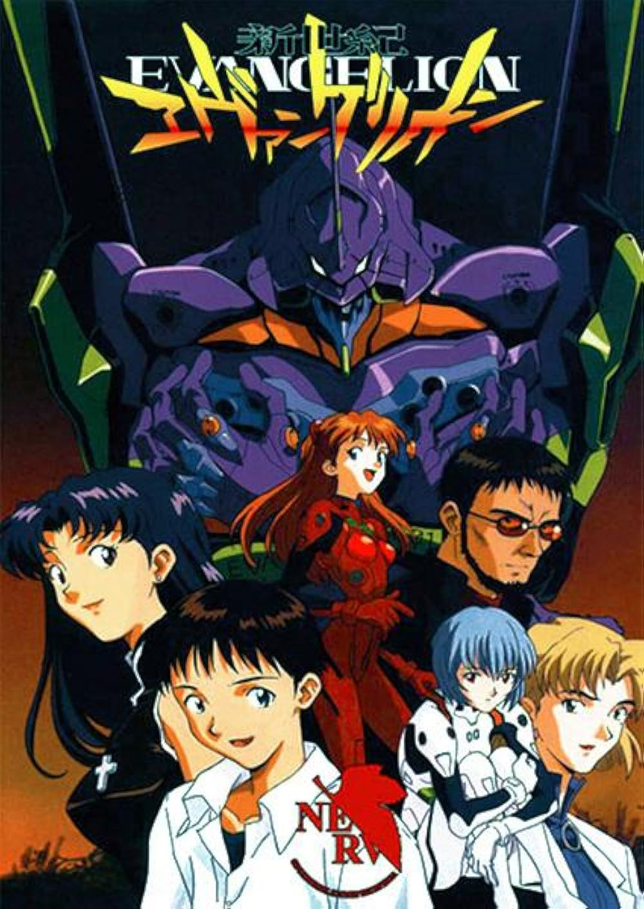
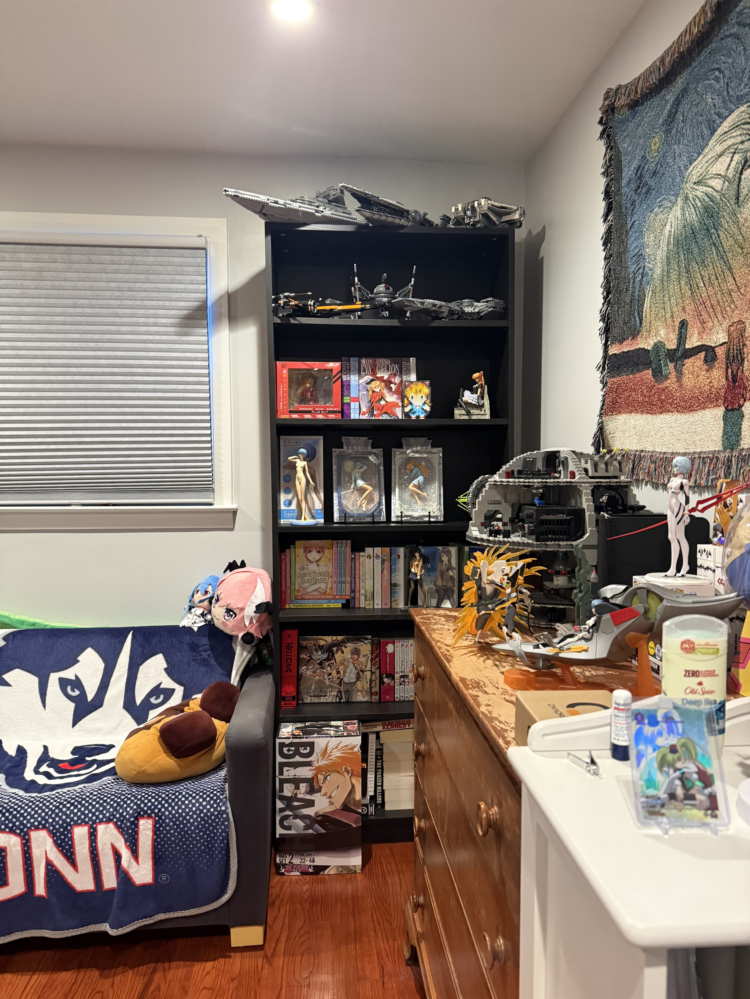

My Life Beyond Tech
When I'm not working on schoolwork or projects for my major, I spend most of my free time in the world of anime. It is easily my biggest passion outside of classes, and I love everything that comes with it—from watching new series to collecting new figures/manga.
Anime + Favorite Shows
I think I've watched over 50 different anime series so far (i only started a watched list this year), and I'm always looking for something new to check out. I really get hooked on shows with deep psychological themes, great action, and stories that leave a lasting impression/keeps you thinking about it.
For me, there's usually nothing better than putting on a really good show after a long day of classes and studying. Getting lost in the shows are the main way I like to relax/recharge.
- Favorites: The GOAT Neon Genesis Evangelion, Code Geass, Elfen Lied, and Black Lagoon.
- Genres: I basically watch any genre
- Watch History: Over 50+ shows completed! (probably)


Manga & Figure Collecting
Watching the shows is awesome, but if I really like a show, I'll probably start to collect its physical media. Reading manga is great because it lets me experience the original art style + material and dive into extra plotlines that never got animated/a chance to be in the show.
On top of collecting manga, I've built up a collection of detailed anime figures. Setting up my display shelves, showing off my favorite characters in my room, and being able to see like "wow, I really own all this" is easily one of my favorite hobbies.
- Manga Collection: Building physical volumes of series I really love.
- Figure Display: Collecting detailed scale figures of iconic characters .
- Hobby Goals: Keeping up with 2nd hand markets to try to find/snipe good deals on stuff I want.